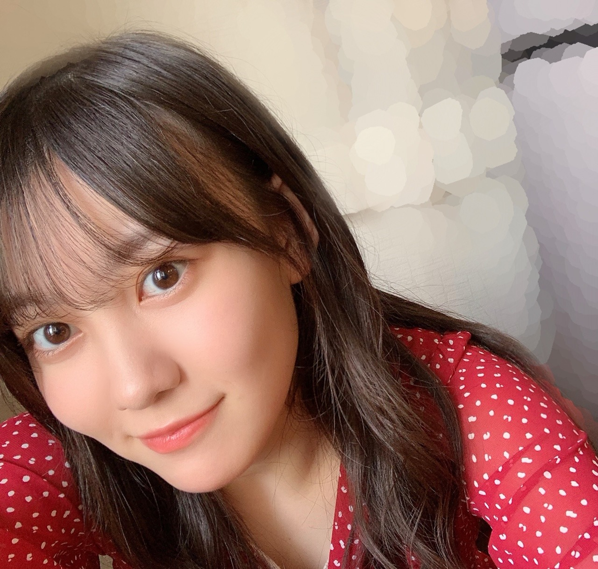

2020/0828Fri赤です、赤、！！ 松尾美佑
漢字ってずーっと見つめてみたり
繰り返し書いていると
なんだこれ。
って、文字に見えなくなりますよね。
赤
赤
赤
なんだろうこれは
でも
赤です、赤なんです。

ちょっと前髪達が配置を間違えたようです。
みんなして右端に寄り過ぎです。
真ん中が過疎化しています。
「赤」といったら「りんご」♪♪
昨日、8月27日
松村沙友理さん、お誕生日おめでとうございます！
本当に綺麗で、笑顔が本っ当に大好きです。
歌番組でのかっこいい目力やパフォーマンスも、バラエティでの面白い一面も、
魅力が沢山過ぎて、尊敬しています。
笑顔溢れる1年になりますようにと気持ちを送っています！
そして！
8月24日
せいらちゃん、20歳！
おめでとう！！
面白くって、美人さんで、スタイルが良過ぎさんで、憧れの素敵なお姉さんです。
せいらちゃんとお話すると何だか安心するというか、その時間が好きです。
私の姉と同い年とは思えないくらい本当にかっこよくって、大人っぽくて。
20歳、本当におめでとう☺︎
幸せいっぱいな1年になりますように、そのお手伝いが出来ますように！
ふっふっふっ
私の最近はですね〜
実はまだ 愛の不時着 を見れていなくて。
課題が落ち着いたら見ようとずっと思っていたんですね。
母が私より先に見始めたんです。
それからですよ、凄く詳しくお話を教えてくれるんです。
え、ちょっとまってまってって。
でも思い返したら私も、
まだ映画を見ていない母に 君の名は の結末を教えちゃったという
重すぎる前科があるので何も言えません。
お話が面白いとついつい話したくなっちゃうんですねᐠ( ᐛ )ᐟ
ひさーしぶりのお返事の会をはじめますね
✽なお〜〜〜〜〜〜〜〜〜〜〜〜〜の伸ばし棒って何個か決まってるんですか？
その時のフィーリングに任せてます( ⋅֊⋅ )
✽Abemaのオオカミくんには騙されない 見てますか？
毎回楽しみに見てます！( Ꙭ)
✽ 最近すごく暑いけど、また天気動かした？？笑
あっ、バレちゃいました？
✽ 明日は晴れますか？
晴れるでしょう！
(大気の状態が不安定で所々ではにわか雨もあるそうです。雷を伴い激しく降るおそれもあるそうなので空を頻繁に眺めてチェックすると良いそうです◎)
晴れます！
✽ 実は来週自分にとって大事な試験があって、みゆちゃんからのエールが欲しいです！
えぇぇっと、今週？もう今週ですか？！
GO FIGHT WIN ！ です！！！
頑張ってください！私も頑張ります！
届いていますように！
✽ 質問:夏休みの宿題は先に終わらせる方ですか?
回答:どちらかというといいえ
✽ 課題は無事終わりましたか？
はい とは言いきれない、つまりどちらかというといいえ
日本史がですね、「考えて書きましょう」が多過ぎて恐怖を感じました。
でももう、もうほんと四捨五入したら終わったって言えるくらいは課題終わりました
るなちゃん心配してくれてありがとう( ;ᯅ; )
皆さんもありがとうございます！！
✽ もう８月ですよ。早くて困っちゃう。
もう次のブログの時には9月になってますよ。
早くて困っちゃう。
( •︠ˍ•︡ )
でも秋はお洋服も空気も食べ物も大好きな季節なので私はわくわくが止まりません！
夏が終わるのは寂しい気持ちも強いけど、
秋冬に向けて温かい気持ちが積もっていく感覚も大好きです。
結果、一年中楽しくて好きです。
さてさて、
明日は
なお〜〜〜〜〜〜〜〜〜〜〜〜〜〜〜〜
今日のフィーリング的に16の 〜 でした！
生命線が短くても気にしないでね、
きっと100歳になっても元気だから。
今日、8月28日
佐々木琴子さん、お誕生日おめでとうございます。
もっと乃木坂の事が知りたい！と強く思ったきっかけの方です。
心の底からおめでとうございます
次は秋です！
秋もよろしくお願いします¨̮
以上！
ミュウでした¨̮
ばいばいですっっっ( Ꙭ )/''

PROFILE
新4期生リレー
202104
| SUN | MON | TUE | WED | THU | FRI | SAT |
|---|---|---|---|---|---|---|
| 1 | 2 | 3 | ||||
| 4 | 5 | 6 | 7 | 8 | 9 | 10 |
| 11 | 12 | 13 | 14 | 15 | 16 | 17 |
| 18 | 19 | 20 | 21 | 22 | 23 | 24 |
| 25 | 26 | 27 | 28 | 29 | 30 | |

コメント(201)
ゲシュタルト崩壊ってやつね。
可愛いですよ(人´∀`*)
本日も可愛さで溶けそうです！
もう次のブログには9月になってるのかー！めっちゃはやいね。。9月入るとすぐに私のところは文化祭だから楽しみです。。
私はやっと梨泰院クラス見始めました！！あとオオカミくんも見てます〜！毎回めっちゃキュンキュンする！私も毎週の楽しみです！
またブログまってるねー！
いつから 天気の子に なった？ 笑笑
今日も可愛いなおい！赤好きなん？サイリウムも赤なんか！？
どちらかというといいえって回答は新しいね笑僕も真似しよ！
8月はお誕生日メンバーいっぱいやったな！
美佑ちゃん天候を操作できるらしい？ので毎日適温でお願いじす！
今日はこの辺で！またブログ更新楽しみにしてるばい！
栃木より愛を込めて。
こんにちは‼︎
今日もミュウちゃんが動かした太陽さんがギラッギラに輝いています
暑い...
赤のお洋服可愛い〜
とってもお似合いですよ
（お店の店員さんみたいになっちゃった
またコメントするね〜
ではでは！
バイバーイ
漢字見すぎたらゲシュタルト崩壊しちゃうよね〜
書き取りの課題とか困っちゃう笑
ネタバレってついついしたくなっちゃうよね笑
なんでだろ？
されるのは嫌なんだけどもね〜
あ、質問！
秋と言ったら「読書の秋」とか「スポーツの秋」とか「食欲の秋」とかあるけどミュウちゃんにとって秋はどんな季節？
俺は食欲の秋だな笑
美味しいものが多いんだよね〜
早く秋になって暑さが和らぐといいんだけどね
今日もミュウちゃんの笑顔素敵だな〜
それじゃまた5日後に！
じゃあね〜
漢字をずっと見てたり書いてたりすると変に見えてくるのすごい分かる！！よくその現象起こる！
私は来週の月曜日から学校なんだけど、学校始まったら夏休みの復習テストみたいなのがたくさんあるんだよね。。最悪だあ ♀️ ♀️
みゆちゃんの前髪すごく綺麗で憧れだよ！
本当に綺麗！
質問です！
今年の夏の1番の思い出は何ですか？？
次のみゆちゃんのブログの時はもう9月だね！
本当に早い！
8月もありがとうございました❤︎
また5日後にね( Ü )
赤は止まれだよ！！可愛！
もう夏終わりだね、あっという間だ…ぴえん。
前髪過疎化は悲劇だね、、、そういえばデコ出しの写真をまだ見たことがないから見てみたいなぁ！
来月のブログも楽しみ！そりでは！
赤ってなんか珍しい気がする！とっても似合ってて可愛いよ
( ¨̮ )︎︎♡
愛の不時着ねwドラマとか映画って見ようと思ってもなかなか見る気が起きないってことあるよねw
日本史は記述多いから難しいよね〜。
キーワード探して、時代の背景とかを盛り込んでそれっぽく書けば文字数もいくし、いい文章になると思うから頑張ってね！！！wwこの時期って何時代やってたんだっけな？www
最近、Twitterで乃木動画の宣伝で4期生のお披露目会のやつがやってて、みゆちゃん達も含めた、お披露目会とかプリンシパルとかが見たいなって思った。どっかで出来たらいいよね〜
なんか短いけど！ここら辺で！
また5日後のブログ更新楽しみに待ってるね！！！！
また5日後にオアイシマショウ( ᐛ )و
ぽぽぽ
いわゆる「ゲシュタルト崩壊」だよね
あら、真っ赤な服じゃん？(*´ω｀*)
前髪は大丈夫だよ＼(^o^)／♪
そっか、まちゅのこと「りんご」さんを呼び始めたの？（笑）
えー、せーらはミュウの実際の姉と同い年か？じゃーさらに親近感あるよね＼(^o^)／
皆と仲良くしたら嬉しいよ♪
ネタバレしがち松尾一家！（笑）私ならばちょっと嫌かも(｡>﹏<｡)（笑）
質問返しお疲れさまでした
久しぶりのGo FIGHT WIN!かな？（笑）
あと宿題の最期のちょっとも頑張って(/･ω･)/
（歴史ならばれなちが得意じゃないの？）
今日は伸ばし棒16個か？次回からどんどん増えそうなあ(｡>﹏<｡)（笑）
おー、こっちゃんにもメッセージか？嬉しい＼(^o^)／
いつか会えたら良いなあ(｡>﹏<｡)
これからも頑張って(/･ω･)/
ブログありがとう〜！！！
めちゃくちゃ可愛い( ˶'-'˶)
大好きだよ¨̮
いつもありがとう( ¨̮ )
質問！
・行ってみたい国はどこですか？
・好きなパンはなんですか？
ってか、あっという間に「あぢぃ～_(:3 」∠)_」って言っていた８月も終わり残り３日で９月ですぞぉ～♪お嬢様☆彡
ってか、僕はとうとう！来月の９月に「誕生日」を迎えるから、めっちゃ楽しみなのでっす♪( *´艸｀)
なんか誕生日を迎える月は、初日から「ソワソワ」してて、「ジョイマン」が頭の中で踊っているような感覚になって、テンションもおかしくなるお兄ちゃんな僕でっす(笑)( *´艸｀)
ってか、８月は乃木メンの誕生日が多すぎなんじゃ～ヽ(^o^)丿って言いたくなる位、毎日「おめでとう＆ありがとう」が飛び交ってるような気がした(笑)( *´艸｀)
僕も、かれこれ今年で「３０うん歳(笑)」になっちゃうから、ミュウ(>o<)ちゃんのお姉ちゃんよりも年上で、新内さんちのまいちゅんさんよりも年上で、さゆりんごさん(笑)よりも年上だぞぉ～ヽ(^o^)丿♪
僕は遅生まれだから、誕生日がくると「やっとかぁ～」っていう気持ちにもなるけど、乃木坂が結成された当時は、もう僕は「三十路前後」だったんだぞぉ～♪たった９年前だし(笑)( *´艸｀)
僕が学生時代の時に「乃木坂46というグループ」があって、一緒に「青春」を感じられたら良かったなぁ～って何度も思いながら、今に至ってるけど僕の学生時代は四捨五入してもう、２０年前に終わってるからぁ～(=ﾟωﾟ)ﾉ
ってか、今日のブログは「よくあるある」な事ですな(笑)( *´艸｀)
まだ見ていない映画＆ドラマの「ネタバレ」を見た翌日に言っちゃうパターン(笑)( *´艸｀)
「まてまてぇ～い(=ﾟωﾟ)ﾉ」って言っても、自分でも相手に同じことをしちゃってるから、「何にも言えない・・・(´・ω・｀)ｼｮﾎﾞｰﾝ」的なや～つですな♪
そして、今日のブログ写真もミュウ(>o<)ちゃんは「シャキ～ンヽ(^o^)丿」ポーズしたり「(っ´ω｀ｃ)ﾌﾟﾆｯ」ってやってみたり、それをやられると僕はあっという間に「凹〇ｺﾃｯ！」ってやられちゃうでござるよぉ～( *´艸｀) それと、ニコちゃんマークのような「くしゃっとした笑顔」をやられると「ズキュ～ン！Σ(･ω･ﾉ)ﾉ！」・・・・凹〇ｺﾃｯ！ってやられるでござる・・・・ってか、な～に言わせてるねん(笑)僕の唯一の弱点を(笑)( *´艸｀)
ミュウ(>o<)ちゃんも乃木坂に加入してリレー形式ブログを２０回以上書いてるし、もう初回の時のようなガッチガチな感じにはなってないなぁ～(*^▽^*)って思いながら、その成長を感じ取ってるんだぞぉ～♪
まだまだ、ミュウ(>o<)ちゃんは成長過程なんだから、いろんな物事を見聞きして、さらにお姉さんにならないとダメやでぇ～ヽ(^o^)丿☆彡
（僕は、歳の離れすぎたお兄ちゃんだから、それなりの人生経験は積んできてるよぉ～）
それじゃあ、次のブログもめっちゃ楽しみにしてるねぇ～ヽ(^o^)丿また５日後に会おうね♪
明日も一日！一緒にお家時間を楽しもうね♪大好きだよ♪ミュウ(>o<)ちゃん☆彡
今日は早いですね
ブログ楽しみにしてました
赤のこれ可愛い
EX大衆さんのかな
髪型
確かに、言われてみればちょっと…
笑わせないでください！
8月は本当に乃木坂は誕生日の方多いですね
毎日誕生会やってそう
宿題はほぼ終わったんですね
新学期はいつから始まりますか？
楽しみですよね
この前、オールナイト日本にかっきーが出てました
まだ高校生だから無理だろうけど、いつかﾐｭｳちゃんが出るの楽しみにしてます
今回のブログは写真いっぱいで嬉しかったです
メガネのもまた載せてね
毎日暑いけど頑張ってください
わかるよその気持ち同じ字をずっとみたらおかしくなるよねたしか、ゲシュタルト崩壊って言うよ
前髪の配置またがっててもかわいいよ！むしろ好きかも
前髪シースルーな感じでいいね！
もう９月だね～ めっちゃ早い！夏もそろそろ終わるから美佑ちゃんが夏にやりたかったこととかしりたいなー
赤の服似合うね～ なんかイチゴっぽいね かわいいよ！
美佑ちゃんはなんでも似合うなー
ブログにもあったけど次は９月だね ９月のミュウちゃんも楽しみにしてるよー
8月は毎週メンバーの誕生日をお祝いしてるね！軍団長から聖来ちゃん、さらには琴子さんまで網羅するのは素晴らしい笑 琴子さんがグループを知る意欲に繋がったのは意外だな〜。
「愛の不時着」か〜。まだ自分も見れてないな。家にいる時間も多くなったので、何週間か前から1日1本映画を見る習慣をつけました。個人的な好みで洋画ばかり観ちゃうけど、これきっかけに韓国系のも観てみようかなー。
自分は来週から月見バーガーが始まると聞いて、秋を感じました笑
秋も秋で楽しみたいな！来週も更新待ってまーす！
元気な笑顔観れるのが癒しです。
赤い服めちゃくちゃ似合ってます！かわいいです！
たしか前にカラフルな服を着たいって言ってたからそれかな…？
質問！！
美佑ちゃんみたいに前髪をくるんっってかわいく巻けるようになりたいです…！コツとかありますか？？
美佑ちゃんが課題を貯めちゃうって聞いて勝手に親近感湧いてます！本当に課題はやる気が消え去ります…笑
ブログ更新ありがとう！
また読めるのを楽しみにしてます！！
赤の服いいね！1枚目の写真まゆたんに似てると思った笑
俺だけかな？笑笑
もう夏も終わっちゃうね。夏休みなんもできなかったのがつらいなぁ…今年の夏は乃木坂のイベント行きまくろうかと思ってたのに笑笑
はやく握手会いきたい！みゅうは絶対行く！
行ったら最高のスマイルください笑
今日はこの辺で！また一周後たのしみにしてるね！
それでは以上『エンドゥ』でした。ばぁい！
みゆスマイルとみゆニヤニヤありがとうございます
いわゆるゲシュタルト崩壊ってやつですね
僕も昔(昔って言っても7、8年前ですよって思って書いたけど、美佑ちゃん小学生ですね､､､)に何度かなったことあります
意外と簡単な字で起こるから不思議ですよね(男って字でなりました)
それとそれと質問のお返事ありがとう
9割5分くらいは課題終わったのかなーと捉えておきますね
抽象的というか、そういう答えがはっきりしない問題嫌ですよねー
テストとかでも丸になった記憶がないですもん
あとちょっとだと思うので応援してます！
ではまた、5日後楽しみに待ってます
炭 ←
わたしは この漢字を ジッと見つめていると
トランプの KING に 見えるわ 。。
ブログ更新ありがとう！
ことこ
今年も、いい年に、なるように
チャァオ～～!☆彡
ミュウちゃん、今日は暑いですねぇ～～⤴️⤴️❕❤️❤️❤️笑顔
つくつくぼうしが鳴いたから、もぉ～夏の終わりだと油断して
今日も～いつも通り早朝(4時半)に起きて
仕事中(朝6時から8時ごろまで)、今年初の熱中症にかかりました～！
熱中症にかかると、めちゃめちゃ体が鈍りますねぇ～❕笑顔
今、やっとアイスクリームを食べました(この夏、初のアイスクリームです)❕笑顔
ミュウちゃんも、熱中症には気をつけてねぇ～～～⤴️⤴️⤴️❕❤️❤️❤️❤️❤️笑顔
・・
おいらは～～先にドラマや映画のネタばらしされた方が好きです❕笑顔
やっぱりストーリーを考えないで、頭が疲れないから～～先に聞くのが好きなんです❕笑顔
でも～やっぱり先に結果を聞くと～～・・
今度は～～どんな過程か、考えてしまいます❕笑顔
それでは～ミュウちゃん、頑張ってねぇ❕❤️❤️❤️❤️❤️笑顔
またねぇ❕❤️❤️❤️笑顔
(＠＾▽゜＠）ゞ❤️❤️❤️
❇️❇️おすまし！⚜️❇️⭐彡
「松尾美佑」って漢字をじ～っと見ていたら、「かわいい」って字に見えてきましたっ！
課題お疲れ様ー！！夏休み短いのにありえへんぐらいの量出るよな笑 ちょっとはこちらの事情も知ってほしい、、 四捨五入したら終わったってことはもう終わりでいいでしょう！笑 色々大変やけど一緒に頑張ろう！！
もうすぐ9月やのにこの暑さいつまで続くんかな、、 そろそろ終わってくれたら嬉しいのに笑 まだまだ暑い日続くけど体調には気をつけてね。ではでは次のブログも待ってます。いつもありがとう。
今日はたまたま平日休みだったので更新後すぐ見れて嬉しいです( ´∀`)
ミュウちゃん赤似合うねぇ～！
かわいい！！
そういえば前回のコメントでEX大衆の話をし忘れましたので…
読みましたよー！
本当にどのカットも素敵でしたが、コーヒーカップに乗ってる時の笑顔が本当に素敵で…
また雑誌に載るときは告知お願いね(笑)
そういやいつもミュウちゃんのブログ更新されるとTwitterで勝手に拡散してるんだけど、それに満足してコメント書くの忘れたりするんだよね(笑)
…忘れないように頑張ります(笑)
またブログ楽しみにしてますね！
くまくまでした！
初めてコメントします！
いつもブログ見てます！
見た目とかファッションとかどストライクでファンになっちゃいました(*^-^*)
早く握手会に行ってミュウちゃんのことをもっと知りたいなと思っています！
もしよければ普段のメイクとスキンケアで使っているものを教えてもらえると嬉しいです！
またコメントしますね(*´∇｀*)
毎日暑いですがいかがお過ごしでしょうか。僕は一年分の「暑いなぁ」を8月で使い切ったと思います。げんです。
漢字がわけわからなくなるのすごくよくわかります。話とは違いますが、ひらがなの「あ」を連続してたくさん書くと無意識のうちに「お」を書いてしまうって聞いたことあるのでお試しあれ。
宿題もお疲れさまです。活動しながらだと大変ですよね。頑張ってくださいね！
それでは今日も一日お疲れさまでした。
おやすみなさい
赤も似合ってるよ！
ブログ更新ありがとう〜
もうすぐ夏が終わりますね。
そろそろ涼しくならないかな〜って
日に日に待つばかりです(・・;)
- - - - - - - -ｷﾘｶｴ- - - - - - - - - - -
赤と言ったらりんご
昨日はまっちゅんの誕生日でしたね♪
実は私…
まっちゅんと同じ誕生日なんです！奇跡！！
友達や家族から、｢松村さんと同じ誕生日で羨ましい〜」
とよく羨ましがられます…(っ´ω`c)
これからも
良い1年を過ごしていけるといいなぁ。
《質問コーナー》
☆ミュウちゃんは紅葉狩り行ったことある？
☆好きな秋の味覚は？
☆ミュウちゃんが一番秋だな〜って感じるものは？
以上です！
ミュウちゃんに沢山の幸せが訪れますように☆*。
ばいっっっっっっ！！( Ꙭ )/''
玉兎より。
初コメントです！
最近みゆちゃんにハマった！遅くないかな？
質問！大学には行く予定ある？
あと得意な教科と苦手な教科教えて欲しい！
過疎化した前髪も可愛いよ！
きれい！前髪､似合ってると思う！
やっと来週のテスト終われば夏休みです、、笑
やっぱ巻いてある髪型の美佑ちゃんめっちゃ似合ってて好き！！
そういえば自分もバイトでゲシュタルト崩壊起きた！そもそもこんな漢字あった？って思った笑笑
質問〇秋はこれがやりたいとかっていう目標とかありますか？？
〇何色のお洋服が好きですか？？
今回のブログでも元気もらいました！！
ありがとう！！
美佑ちゃんにとってより良い日々になりますように！
ゴードンでした！
赤?自分の中では赤い彗星のシャアしか
浮かばなかった、、、すみません(*T^T)
コメントする